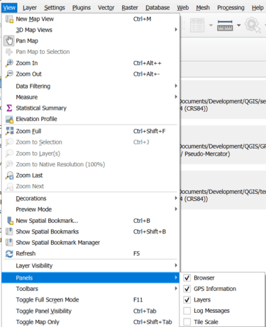
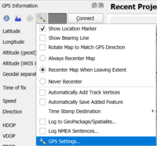
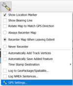
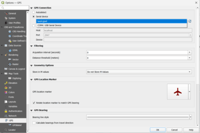
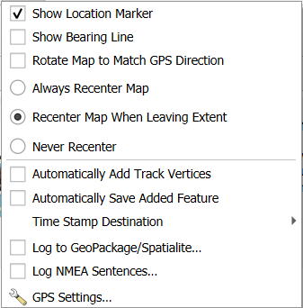

Contact Us

development@eskspatial.com.au
Website
Digital Sketch Mapping Tool Help
Digital Sketch Mapping Tool is a Python plugin for digitising points, polygons and multi-line features on the map.
This plugin integrates with the built-in QGIS GPS functionality to display the current position.
Instructions and settings for enabling and configuring GPS features.
Make sure the GPS Panel is active:

GPS Settings could be changed, either using the GPS panel or via the toolbar


Using the following screen, a user can update the GPS Settings such as the device/mode of connecting.
Updating the GPS Location marker, Bearing and Track line styles.

Using the following screen, a user could change the selected attributes.
By default, when digitising the Map Recenter and Rotation will be switched off.
To enable location marker, bearing line check the respective checkbox.
To save the location data from the GPS, check the Log to GeoPackage/Spatialite... option.

Watch our video tutorial below: